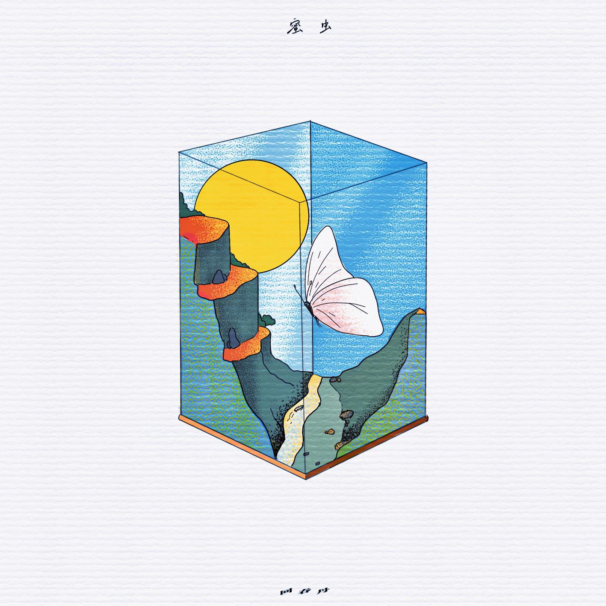
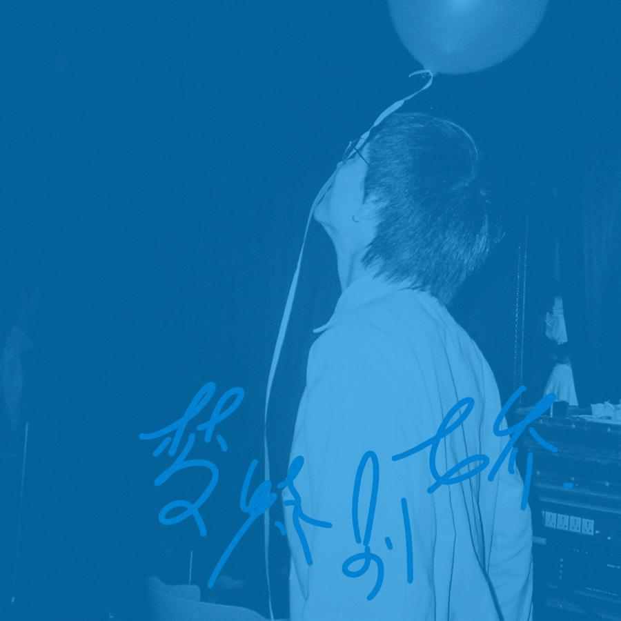

《初恋》
这里有一本奇妙的记事簿，名为“恋恋”。“恋”字拆开是亦心，即亦如初心，一如既往。“恋”是对过往美好时光的浪漫告白，是可以跨越岁月却永不磨灭的青春记忆。

《蜜虫》
在接下来的五首歌里，“蜜虫”特指--甜蜜的网虫，即那些沉溺互联网世界“虚拟”情感的“迷糊虫”,当然这里的描述其实甚酌了好久。

《梦特别娇》
现实就像是住在万花筒里的梦，一次次推落你，流泪，或者爬起来。或者坐在车厢里望向窗外，夜色如常。